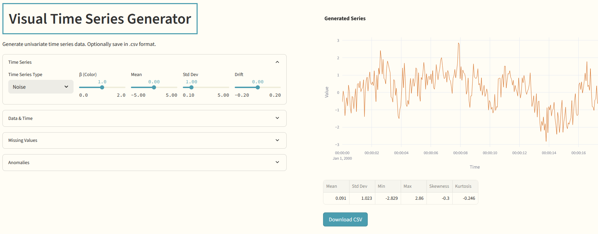
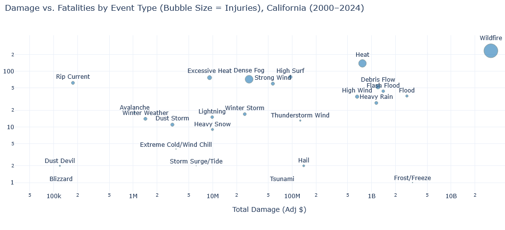

Dmitriy Bolotov

Let's Connect
Navigation
Welcome
I’m a senior data scientist focused on applied machine learning and practical AI.
Over the past decade, I’ve worked in adtech and IoT & industrial analytics, developing solutions using predictive modeling, anomaly detection, deep learning, and applied LLM tools.
This site shares a few projects and open-source tools I've worked on.
Data Science Projects

Time Series Smoothing Visualizer -
Interactive app that helps users understand six common smoothing techniques for time
series data.

Visual Time Series Generator -
Interactive app for generating time series data. Includes options for missing values and
anomalies.

Severe Weather in California -
Data analysis exploring the most damaging weather events in California after the year 2000.
R Packages
I worked on several open-source packages in the R language to support machine learning model deployment and experimentation: